01 / BACKGROUND项目背景
《高朱蒙·集安行纪》以吉林省集安市为地域坐标，以高朱蒙的历史故事为创作线索，将高句丽文化记忆与当代城市旅行连接起来。“行纪”既是角色的旅途记录，也是游客认识集安的一条叙事路径。
在这段旅程中，三足金乌寄托着风调雨顺、繁荣昌盛的祝愿；一碗冷面承载着鸭绿江畔的生活滋味；集安国门则成为连接历史与未来的城市意象，让厚重的文化走进可感知、可亲近的日常。
文旅IP设计
《高朱蒙·集安行纪》以吉林省集安市为地域坐标，以高朱蒙的历史故事为创作线索，将高句丽文化记忆与当代城市旅行连接起来。“行纪”既是角色的旅途记录，也是游客认识集安的一条叙事路径。
在这段旅程中，三足金乌寄托着风调雨顺、繁荣昌盛的祝愿；一碗冷面承载着鸭绿江畔的生活滋味；集安国门则成为连接历史与未来的城市意象，让厚重的文化走进可感知、可亲近的日常。
以“跟着高朱蒙游集安”为叙事主线，将历史人物转化为亲切、有活力的城市向导。围绕人物、神鸟、地方美食与城市地标建立角色及辅助图形，让文化符号既保留辨识度，也具备轻松、有趣的表达。
视觉上以明快的橙黄配色、圆润的卡通造型与旅行标识串联整体风格，并延伸至场景插画、宣传画面和文创应用。通过“角色带路、场景讲故事、产品承载记忆”的方式，让游客从认识集安，到愿意探索集安，再把旅行记忆带回日常。
项目实际图片
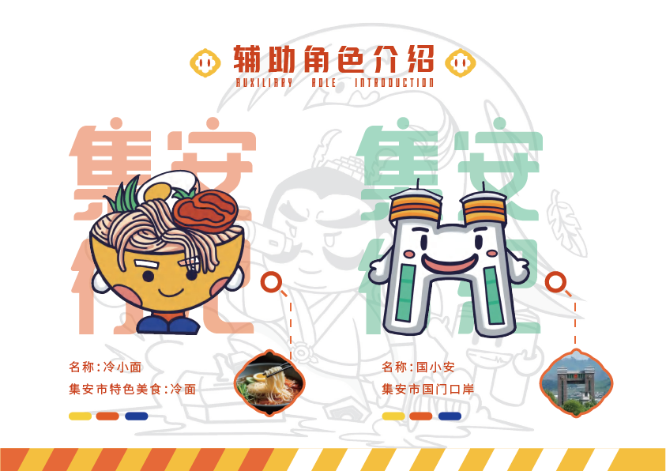
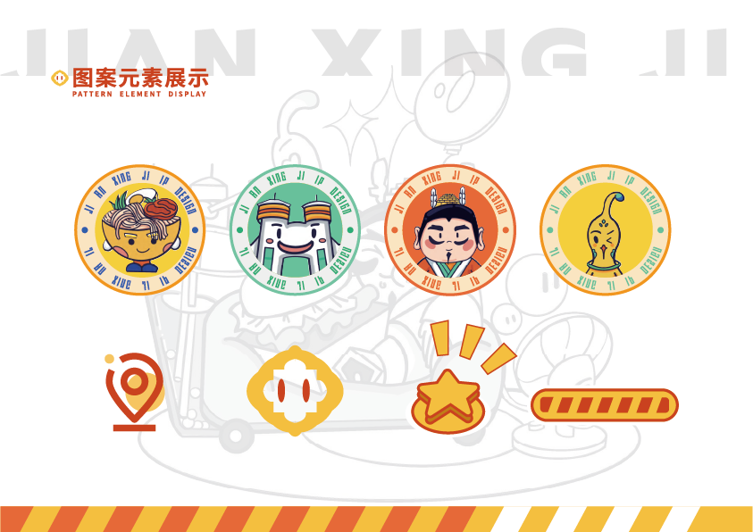
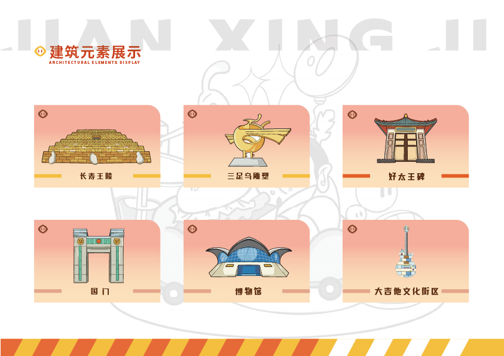
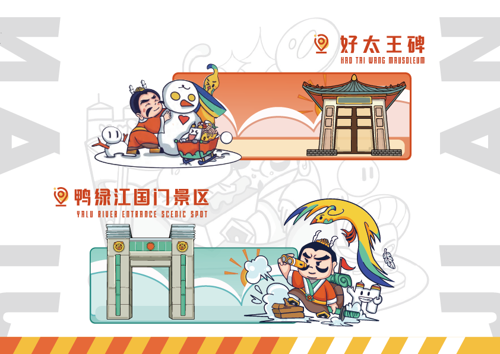
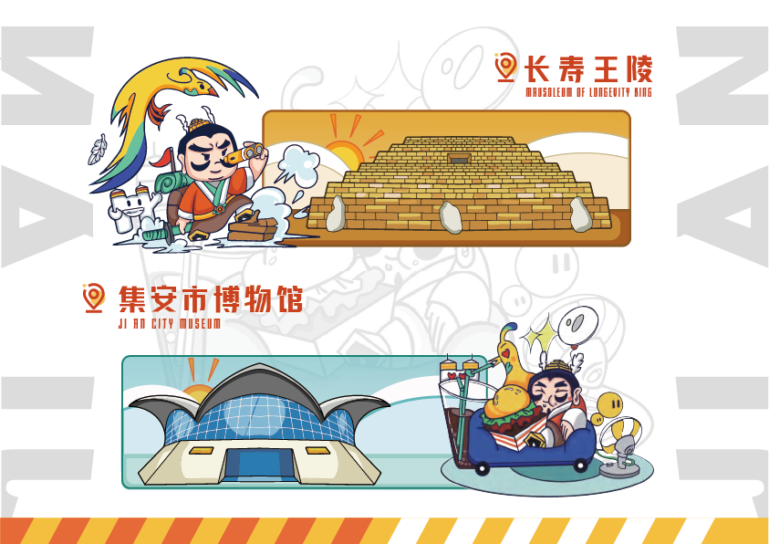
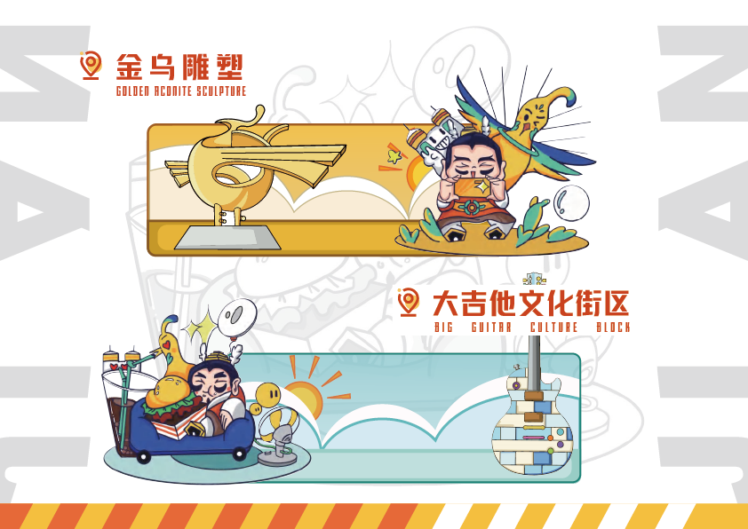
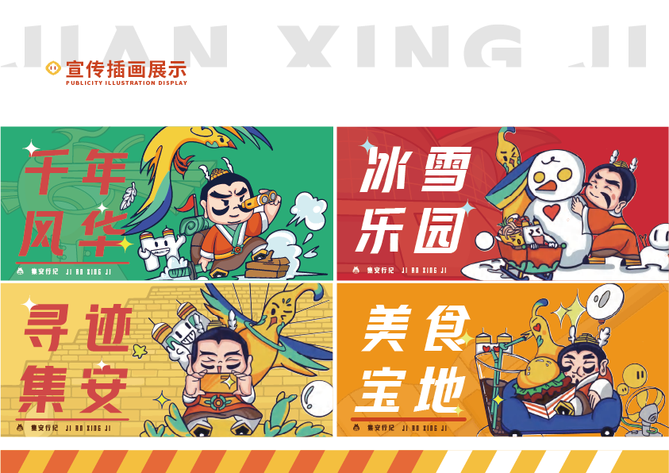
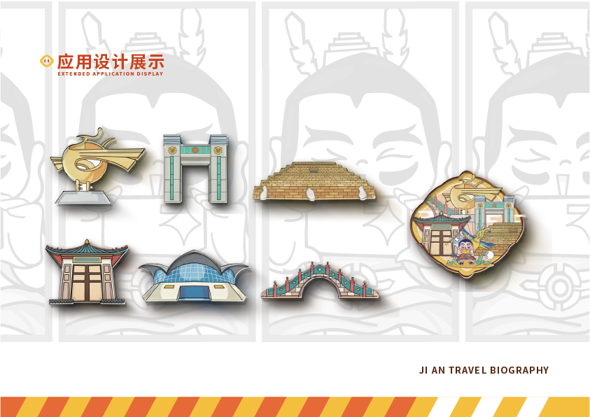
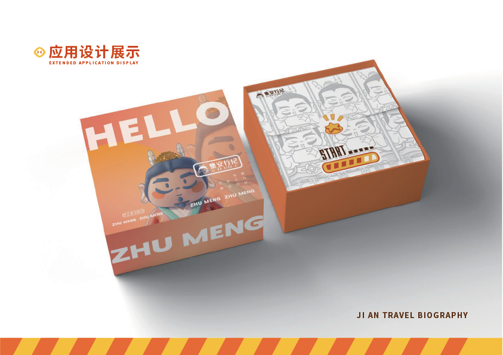
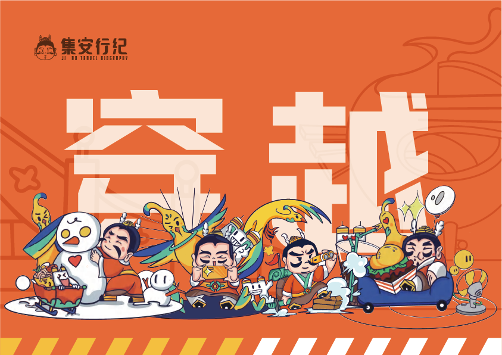
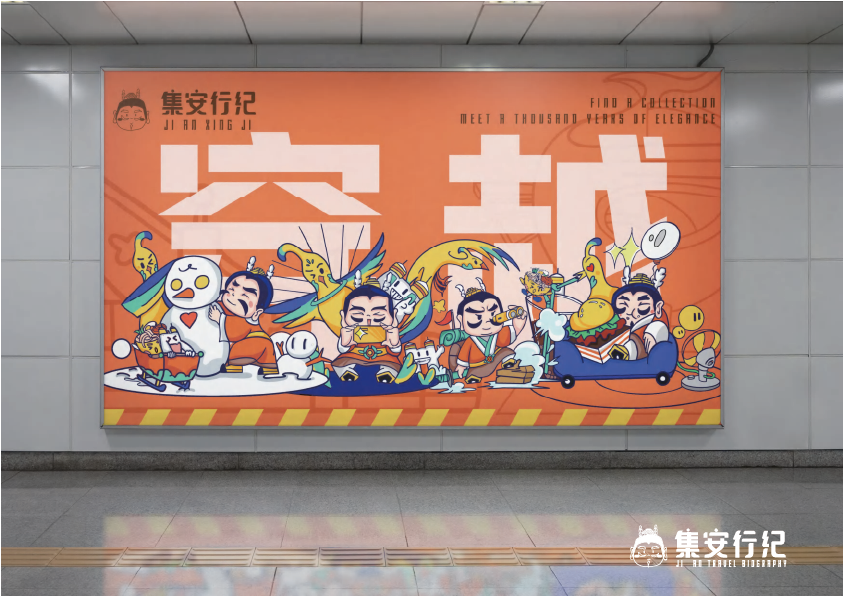
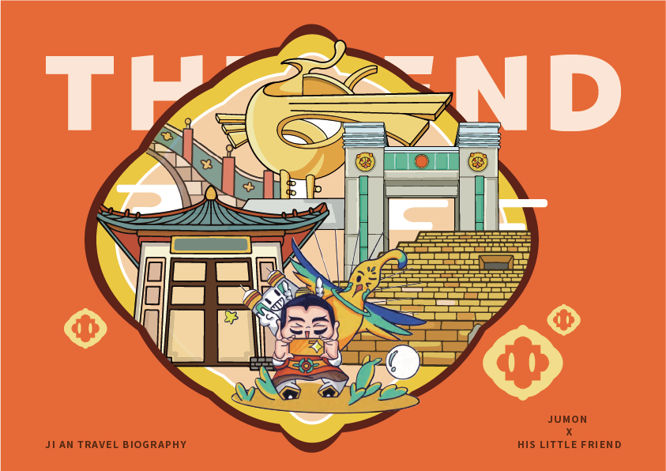